Для повышения кармы очищайте океан от мусора (ЛКМ по плавающему мусору)
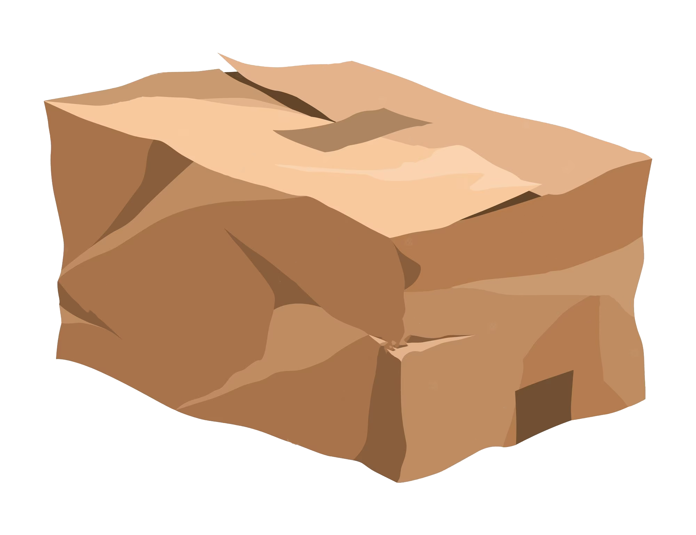
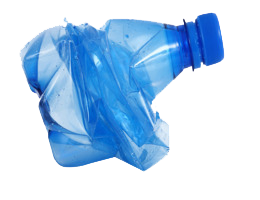
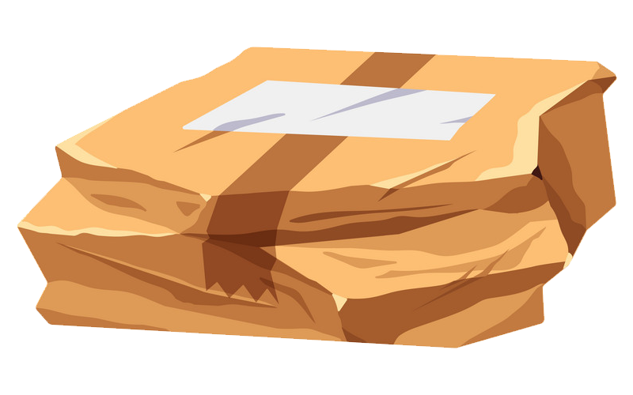
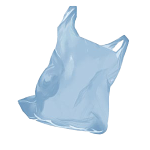
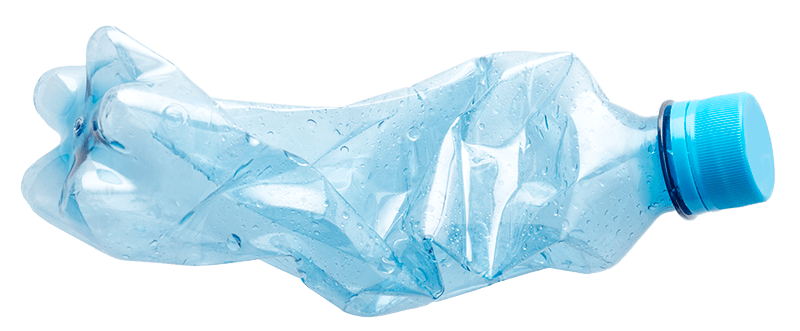
Easter Egg
--------------
Марина Н. ❤️
Python Start🐍
The Deep Ocean
0 METERS DEEP
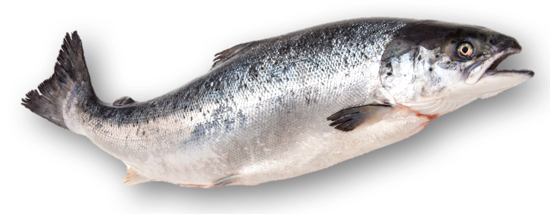АТЛАНТИЧЕСКИЙ ЛОСОСЬ
Атлантический лосось, которого называют также благородным
лососем, или семгой, — рыба крупная, достигающая в длину 1,5 м и массы 39 кг.
Распространен атлантический лосось в бассейне северной части Атлантического океана.
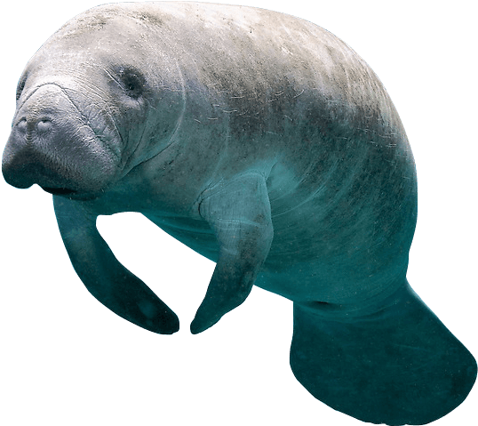ЛАМАНТИН
Ламанти́ны — род больших водных млекопитающих монотипного семейства Trichechidae из отряда сирен.
Эти травоядные животные обитают на мелководье и питаются водной растительностью.
ПОЛОСАТЫЙ ОКУНЬ
Полосатый лавра́к, или полосатый окунь — вид лучепёрых рыб из семейства мороновых.
Распространён в Атлантическом океане у побережья Северной Америки.
Поперек тела тянутся 5—9 темных полосок.
СТАГОРНИЙ КОРАЛЛ
Staghorn кораллы встречаются повсюду на Флорида-Кис, Багамах и на Карибских островах.
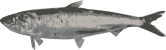ЕВРОПЕЙСКАЯ САРДА
Сардина — промысловое название трёх родов рыб семейства сельдевых.
Тело удлинённое, почти цилиндрической формы, брюхо округлое.
ПОЛЯРНЫЙ МЕДВЕДЬ
Белый медведь — самый крупный представитель семейства медвежьих и отряда хищных,
масса животного может достигать 800 кг.
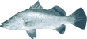БАРРАМУНДИ
Баррамунди — белый морской окунь — хищная австралийская рыба,
обладающая двумя выдающимися свойствами:
в ней практически нет костей и её мясо даже в результате долгой
термической обработки, не теряет сочности.
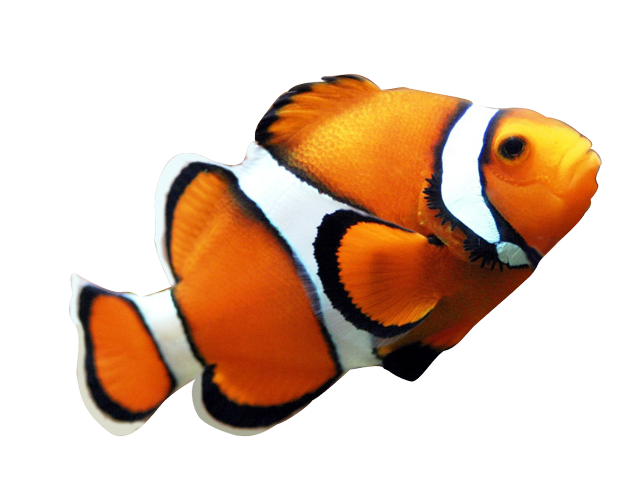РЫБА-КЛОУН
Рыба-клоун размер составляет 7 см, отдельные экземпляры вырастают до 11 см.
Самки крупнее и агрессивнее самцов. Тело сплюснуто с боков, спина высокая,
голова короткая
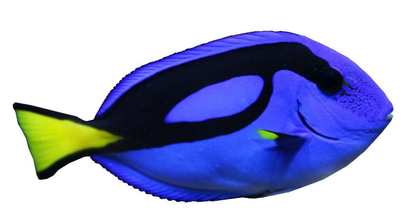СИНИЙ ТАНГ
Голубой хирург - Тело сжатое с боков, яйцевидной формы.
Длина тела составляет от 15 до 30 см.
Для этого вида характерны длинные спинной и анальный плавники,
а также отвесно спадающий лоб.
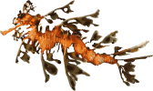ЛИСТВЕННЫЙ МОРСКОЙ ДРАКОН
Лиственный морской дракон или морской пегас – рыба,
и называют их так за фантастическое оперение. Они родственники морского конька.
Полупрозрачные нежные зеленоватые плавники в изобилии покрывают его тельце
и постоянно колышутся от движения воды, словно роскошные листья от дуновения ветра.
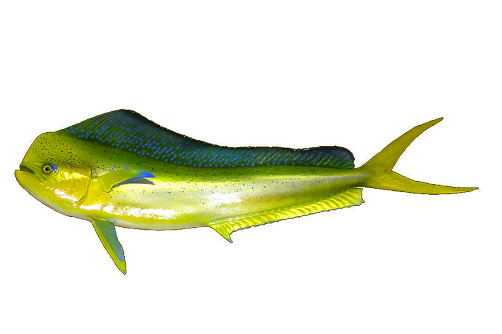МАХИ-МАХИ
Махи-махи — вкусная рыба с низким содержанием углеводов и жиров,
так что это полезный выбор практически для любой диеты.
Обитает корифена в теплых водах Средиземноморья, Тихого,
Атлантического и Индийского океанов.
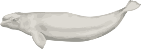БЕЛУХА
Белуха представляет собой млекопитающее семейства дельфина подотряда зубатые киты.
Этот вид является полярным дельфином,
ареал обитания которого располагается в морях Северного Ледовитого океана.
КАСАТКА
Коса́тка — вид китообразных из семейства дельфиновых пар отряда зубатых китов.
Единственный современный представитель рода косаток.
Признан самым крупным представителем своего семейства и единственный среди
современных китообразных настоящий хищник, преследующий теплокровных животных.
КРАСНЫЙ СНЕППЕР
Это рифовая хищная рыба, питается рачками, головоногими и другими беспозвоночными,
мелкой рыбой. Может достигать 1 м в длину и веса 20 кг.
Обитает в странах Мексиканского залива и в Юго-Восточной Азии.
ПЕЛАГИЧЕСКИЙ СКАТ
Пелагический скат - вид из ската в семействе Dasyatidae,
и единственный представитель своего рода.
Для него характерна клиновидная форма диска грудного плавника,
который намного шире, чем длина, а также заостренные зубы у обоих полов,
хлыстоподобный хвост с очень длинным хвостовым шипом и однородная окраска от фиолетовой до сине-зеленой.
МОРСКОЙ ЛЕВ
Северный морской лев.
Цвета варьируются от светло-коричневого до красновато-коричневого.
Это самый большой лев из ушастых тюленей.
Самцы имеют длину до 3,3 метра и весят 1 т, а самки — около 2,5 метров
и весят менее 300 кг.
БЫЧЬЯ АКУЛА
Акулы-быки достигают довольно крупных размеров.
Максимальная зарегистрированная длина составляет около 3,5 м,
а вес — около 360—450 кг. По другим данным — 4 м и 575—600 кг.
Самки крупнее самцов, их средняя длина составляет 2,4 м, а вес 130 кг,
тогда как для самцов эти показатели равны 2,25 м и 95 кг соответственно.
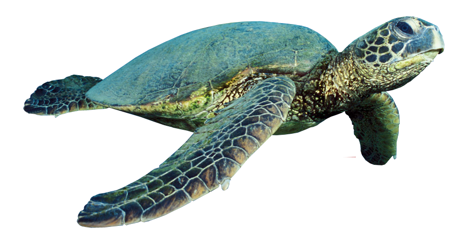ЗЕЛЕНАЯ МОРСКАЯ ЧЕРЕПАХА
Ареал зелёной черепахи включает тропические и субтропические районы
мирового океана, особенно распространена в водах Атлантического
и Тихого океанов. Зелёная черепаха — крупная,
длина панциря от 80 до 150 см, масса — от 70 до 200 кг,
очень редко достигает длины 200 см и массы 400—500 кг.
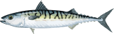АТЛАНТИЧЕСКАЯ СКУМБРИЯ
Атлантическая скумбрия— рыба семейства скумбриевых отряда скумбриеобразных.
Максимальная длина тела — 60 см, средняя — 30 см. Тело веретёнообразное,
покрыто мелкой циклоидной чешуёй.
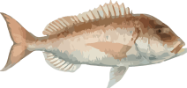ДЕНТЕКС
Дентекс - это морская рыба, принадлежащая к семейству Sparidea.
У нее сжатое с боков тело, высокая спина и металлический блеск.
Она вырастает до одного метра в длину и может весить до 15 кг.
Дентекс встречается в Средиземном, Адриатическом и Атлантическом океанах,
на глубине до 200 м.
СУМЕРЕЧНАЯ ЗОНА
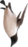ТОЛСТОКЛЮВЫЙ КАЙСЕР НАЙВЕР
Толстоклювые кайры являются одними из самых
глубоководных ныряльщиков среди всех птиц,
регулярно погружаясь на глубину более 100 метров,
а иногда и ниже 200 метров.
Они могут нырять более 3 минут.
ВОЛЧИЙ УГОРЬ
Это животное на самом деле рыба, а не угорь.
Как и у других рыб, у них есть грудные плавники и
пары жаберных щелей. У этих рыб есть один спинной плавник,
который проходит почти по всей длине их тела.
Их скелет состоит из от 228 до 250 гибких рыбьих костей.
У них есть небольшой хвостовой плавник и нет брюшных плавников.
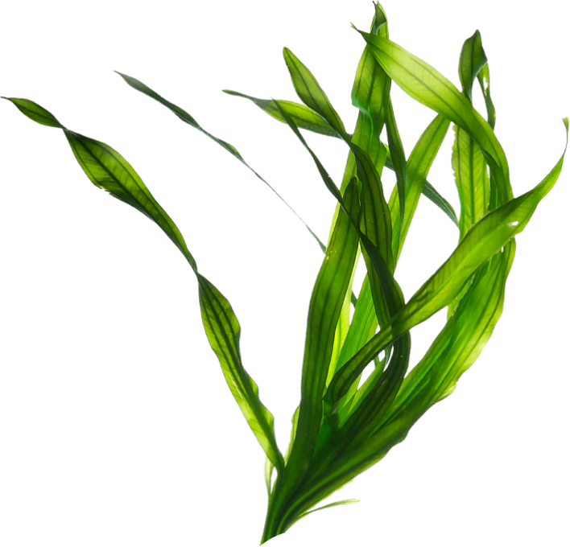КЕЛП
Келп - самое длинное водное растение из всех бурых водорослей,
его таллом состоит из листообразных пластин.
Водоросль келп – не только источник органического йода,
но и настоящий кладезь полезных веществ, необходимых человеческому организму.
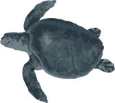ОЛИВКОВАЯ МОРСКАЯ ЧЕРЕПАХА
Оливковая черепаха является сохранившимся видом морских черепах
с длиной панциря у взрослых особей 60—70 см. Масса до 45 кг.
Панцирь по форме напоминает сердце и характеризуется наличием четырёх
пар пористых щитков по нижней его границе
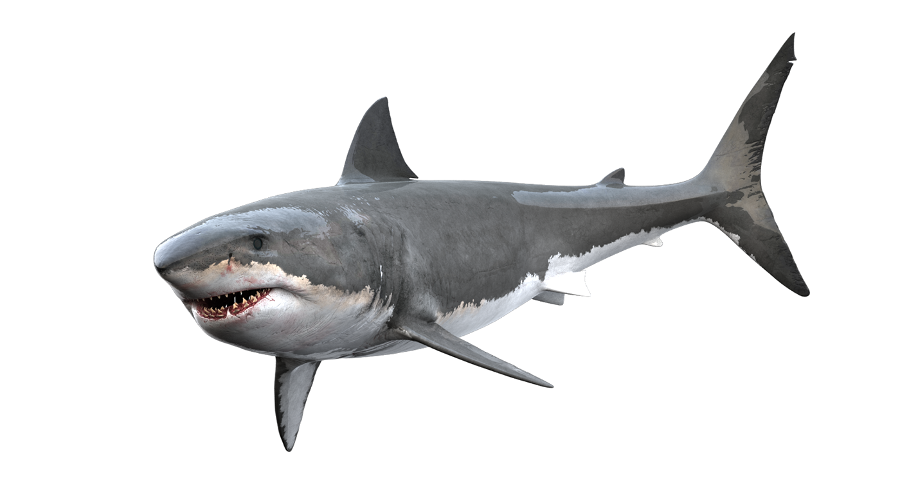БОЛЬШАЯ БЕЛАЯ АКУЛА
Размер типичной взрослой особи белой акулы — 4—4,9
метров при массе в 680—1100 кг.
Самки, как правило, крупнее самцов
и обычно вырастают до 4,6—4,8 метров в длину,
в то время как самцы как правило вырастают до 3,4—4 м.
В популяции наиболее распространены более молодые особи длиной около 3,81 м.
ГУММИ АКУЛА
Мармеладные акулы — относительно небольшой вид со стройным
телом и короткой головой. Они серые или серо-коричневые сверху и
белые снизу, с белыми пятнами на спине и верхних сторонах.
Второй спинной плавник почти такой же большой, как первый спинной плавник.
332 метра — это самое глубокое погружение с аквалангом,
на которое когда-либо погружался человек.
Рекорд установлен Ахмедом Габром в 2014 году.
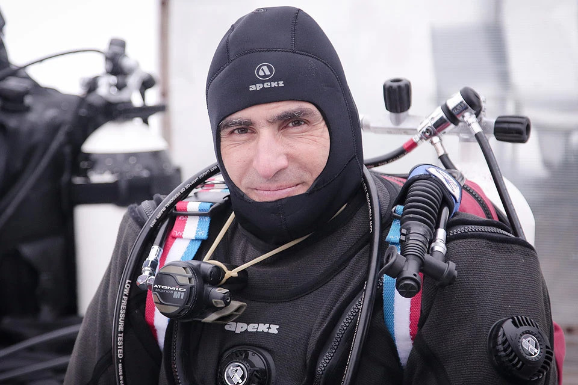
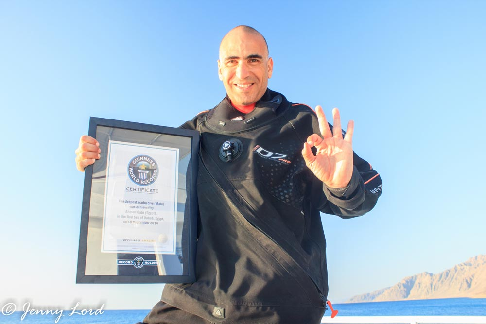
СВЕРКАЮЩИЙ КАЛЬМАР
Кальмар-светлячок, также широко известный как сверкающий
кальмар-эноп или хотару-ика в Японии,
является разновидностью кальмаров семейства Enoploteuthidae.
Это единственный вид монотипного рода Watasenia.
МОРСКОЙ АНГЕЛ
Морские ангелы — это большая группа мелких свободно плавающих
морских слизней, которые подразделяются на шесть разных семейств.
Используют крылья для передвижения.
АКУЛА-МАКО
Акулы-мако, или серо-голубые акулы, или мако —
род акул семейства сельдевых (или ламновых) акул.
Тело узкое, стремительной формы,
голова почти в точности конической формы,
рот в форме острой параболы. Зубы у этих акул длинные и узкие,
внешне похожи на шило и очень остры.
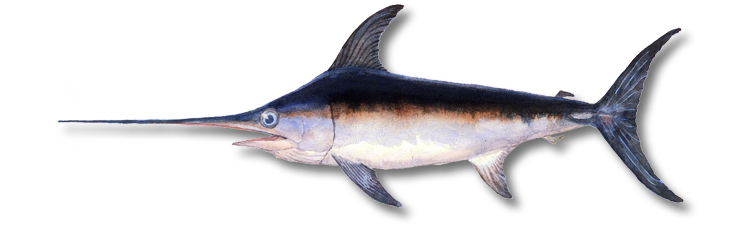РЫБА-МЕЧ
Это одинокий, очень мигрирующий, очень прожорливый и
агрессивный хищник, поглощающий свою добычу сразу.
Ест мелкую рыбу (сардины и скумбрия) и кальмаров.
Хвост в форме полумесяца позволяет рыбе-меч разгоняться до
100 км/ч. Её размеры могут достигать 4,5 метров в
длину и 540 кг в весе.
ЯПОНСКИЙ КРАБ-ПАУК
Небольшое тело – головогрудь без ног – достигает
в длину не более 60 см., а вот с вытянутыми конечностями
может достигать до 4 м! Масса взрослой особи доходит до 20 кг.
Самцы крупнее самок. А свое название он получил благодаря
поразительному сходству с пауком.
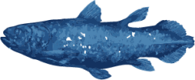ЦЕЛАКАТ
Латиме́рии — род семейства латимериевых
отряда целакантообразных (Coelacanthiformes).
Одно из живых ископаемых. В настоящее время известно два
вида латимерий: Latimeria chalumnae, открытая в 1938 г.,
обитающая у восточного и южного побережья Африки,
и Latimeria menadoensis, открытая и описанная в 1997—1999 гг.
возле острова Сулавеси в Индонезии.
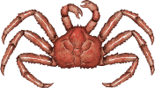КОРОЛЬ КРАБ
Это один из видов ракообразных, причем самый крупный из тех,
что обитает и ловится на побережьях Камчатки. За границей его
прозвали Королевским Крабом (King Crab) именно за его размер.
Впрочем, по вкусовым качествам он также заслуживает первого
места!
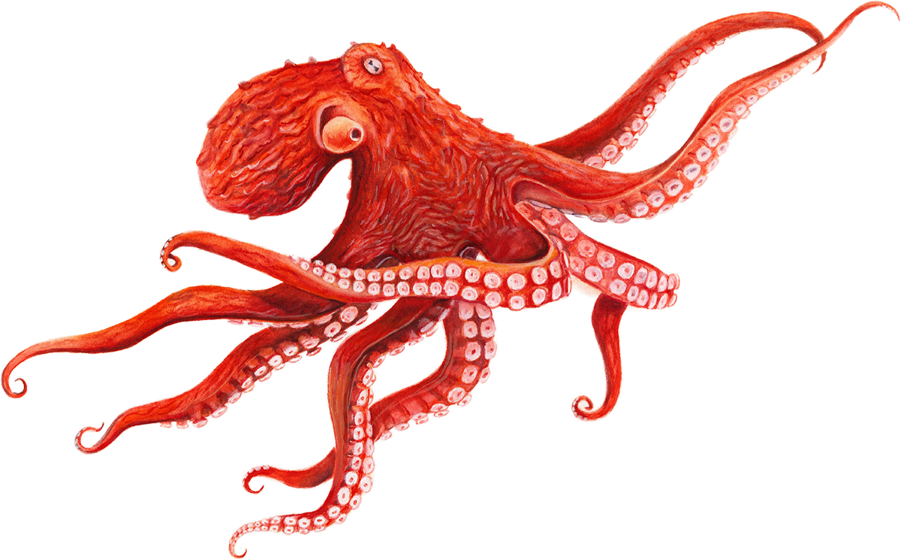ГИГАНТСКИЙ ТИХООКЕАНСКИЙ ОСЬМИНОГ
У гигантского осьминога орган воронки W-образный.
Над глазами имеются 3-4 шишкообразно увеличенных бородавки,
по одному крупному кожистому ушку. У самцов гектокотиль узкий,
полузакрытый, почти трубкообразный. Тело круглое или овальное,
морщинистое, покрыто изолированными бородавками.
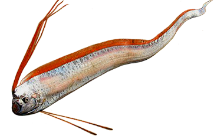СЕЛЬДЯНОЙ КОРОЛЬ
Сельдяно́й коро́ль, или обыкновенная реме́нь-ры́ба,
или ремнете́л, — вид лучепёрых рыб семейства ремнетелых
отряда опахообразных. Пелагическая рыба, встречающаяся в тёплых,
умеренно тёплых и умеренных водах Тихого, Атлантического и
Индийского океанов.
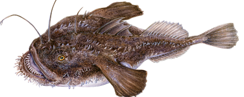МОРСКОЙ ЧЕРТ
На английском имеет название Monkfish. Внешний вид под стать
названию, точней благодаря весьма жуткому виду рыба и получила
такое название. Огромная пасть с бесчисленным количеством мелкий
и острых зубов. Рыба-черт глубоководный обитатель холодных вод
Атлантического океана и ловится от берегов Норвегии до Португалии.
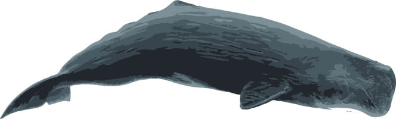КАШАЛОТ
Известно, что кашалоты ныряют на глубину до 3280
футов в поисках кальмаров для еды. Этим гигантским
млекопитающим во время таких погружений приходится
задерживать дыхание на срок до 90 минут.
Эти зубатые киты съедают тысячи фунтов рыбы и кальмаров
— около одной тонны в день.
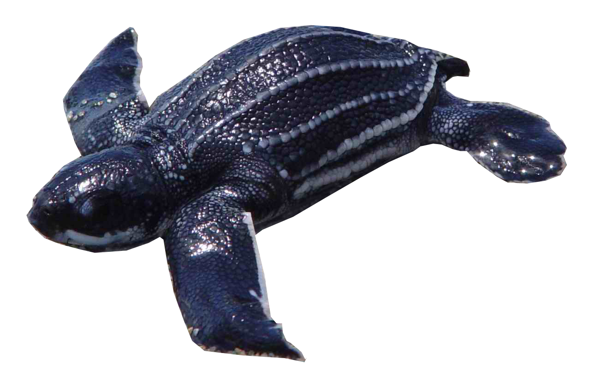КОЖИСТАЯ ЧЕРЕПАХА
Кожистая черепаха — единственная морская черепаха,
у которой нет твердого панциря. Его панцирь большой,
удлиненный и гибкий с 7 отчетливыми гребнями, идущими по
всей длине животного. Панцирь, состоящий из слоя тонкой,
жесткой, эластичной кожи, укрепленной тысячами крошечных
костных пластин, не имеет чешуи, за исключением детенышей.
КЛЮВЫЙ КИТ БЭРДА
Во взрослом возрасте они могут весить примерно до 26 455 фунтов.
У клюворылых китов Бэрда большое, стройное, длинное, крепкое тело
с относительно небольшим закругленным треугольным спинным плавником,
расположенным примерно на две трети длины их спины.
ПОЛУНОЧНАЯ ЗОНА
Солнечный свет не может достичь такой глубины.
УДИЛЬЩИК
Удильщикообразные, или морские черти —
отряд лучепёрых рыб с преимущественно курьёзной
внешностью. Одним из их отличительных признаков
являются твёрдые грудные плавники, служащие для опоры.
Все удильщикообразные обитают в море, в основном на
большой глубине.
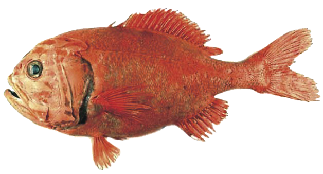ОРАНЖЕВЫЙ БОЛЬШЕГОЛОВ
Оранжевый большеголовый имеет ярко-красновато-оранжевую
голову и тело. Тело сжатое, овальной формы. Голова
покрыта костными гребнями и глубокими слизистыми
полостями. Рот и жаберные полости иссиня-черные.
РЫБА-КАПЛЯ
Рыба-капля — розовая рыба длиной в фут,
обитающая в глубоких водах у берегов Австралии
и Новой Зеландии. У него мягкие кости и мало мышц,
и у него отсутствует плавательный пузырь,
наполненный газом внутренний орган, который
позволяет большинству костистых рыб контролировать
свою способность оставаться на плаву в воде.
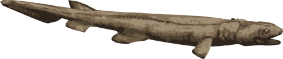ПЛАЩЕНОСНАЯ АКУЛА
Плащеносная акула получила свое название из-за вычурного вида
ее жаберных щелей. Плащеносные акулы являются активными
хищниками и могут броситься на потенциальную добычу,
проглотив ее целиком, даже если она довольно крупная. Их обычный стиль плавания,
однако, отчетливо похож на угря, поскольку они плавают змеиным образом.
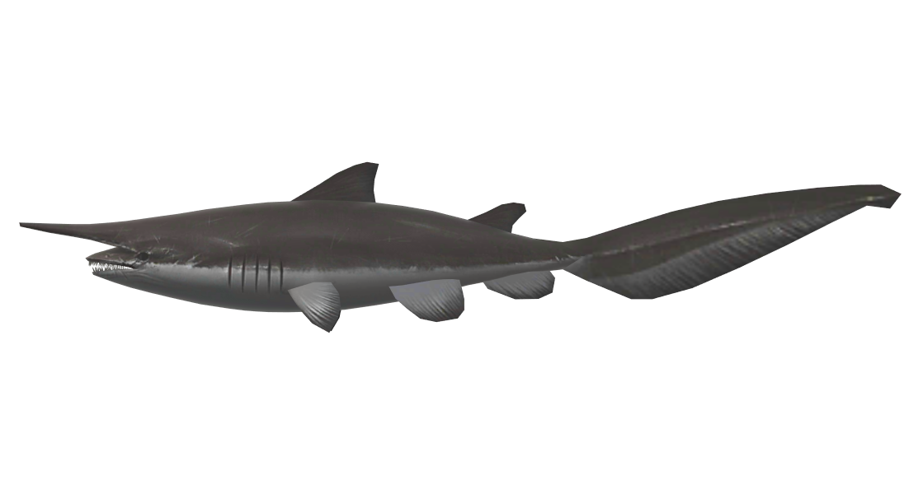АКУЛА-ГОБЛИН
Акулы-гоблины — это вид рыб, которые обычно обитают на дне океана вдоль
континентальных шельфов (или на окраинах континентов). Эти розовые животные
могут достигать 12 футов в длину и весить до 460 фунтов. У них узкие морды и
клыкообразные зубы.
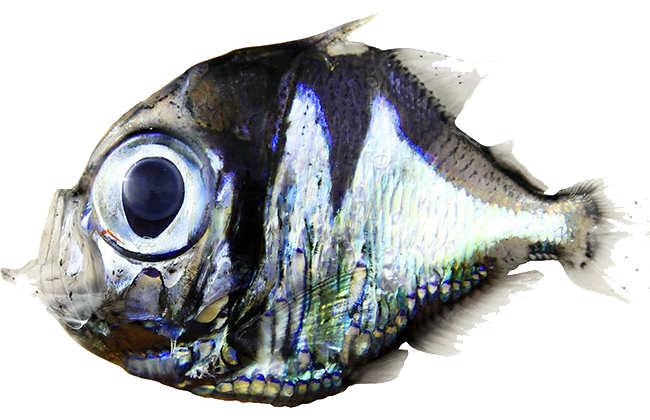РЫБА-ТОПОРИК
Рыба-топорик хорошо маскируется. Как и у многих глубоководных рыб, у
них есть органы, производящие свет, расположенные рядами вдоль брюшка.
Эти органы излучают бледно-голубой свет, который соответствует дневному свету,
проникающему сверху вниз, и скрывает их от хищников внизу.
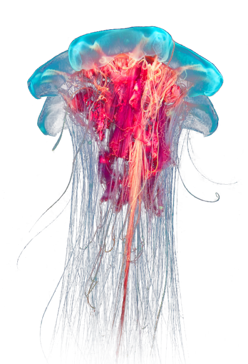БОЛЬШАЯ КРАСНАЯ МЕДУЗА
Тело цианеи имеет разнообразную окраску, с преобладанием красных и бурых тонов.
У взрослых экземпляров верхняя часть купола желтоватая, а его края красные.
Ротовые лопасти малиново-красные, краевые щупальца светлые, розовых и фиолетовых оттенков.
Молодые особи окрашены значительно ярче.
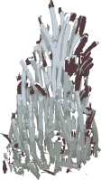ГИГАНТСКИЙ ТРУБЧАТЫЙ ЧЕРВЬ
Эти гигантские трубчатые черви вырастают до восьми футов (более двух метров) в
длину и не имеют ни рта, ни пищеварительного тракта. Они зависят от бактерий,
которые живут внутри них в качестве пищи. Этот тип взаимовыгодных отношений между
двумя организмами известен как симбиоз.
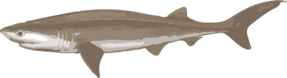ШЕСТИЖАБЕРНАЯ АКУЛА
Тупоносая шестижаберная акула. Эта крупная глубоководная акула является примером
значительно более примитивных видов, обнаруженных только в виде окаменелостей.
У него широкая плоская голова, большие зеленые глаза и маленький единственный
спинной плавник далеко вдоль спины. Средняя длина составляет от 15 до 16 футов,
цвет от серого до оливкового или коричневого.
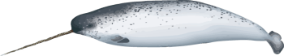НАРВАЛ
Нарвал выглядит как нечто среднее между китом и единорогом с его длинным спиральным бивнем,
выступающим из головы. У самцов чаще всего есть бивни, а у некоторых их может быть даже два.
Бивень, который может вырасти до 10 футов, на самом деле является увеличенным зубом.
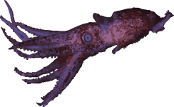ДРАГОЦЕННЫЙ КАЛЬМАР
Обратный драгоценный кальмар или удлиненный драгоценный кальмар, является
разновидностью косоглазого кальмара, названного так потому, что глаза не похожи друг
на друга.
АМФИТРЕТУС ПЕЛАГИЧЕСКИЙ
Амфитретус пелагический - вид мезопелагических осьминогов из семейства Amphitretidae.
Характеризуются наличием одного ряда присосок на каждой руке,
мягким гелеобразным телом и неполусферическими глазами. Средняя длина мантии 10 см,
максимальная длина мантии самца 30 см.
ГИГАНТСКИЙ ИЗОПОД
Гигантские изоподы — род крупных равноногих ракообразных, включающий около 15 видов.
Они в больших количествах встречаются в холодных, глубоких водах Атлантического,
Тихого и Индийского океанов.
ГИГАНТСКИЙ КАЛЬМАР
Антарктический гигантский кальмар, или антарктический глубоководный кальмар —
глубоководный вид кальмаров и единственный представитель рода Mesonychoteuthis. В
ненаучной прессе и популярной литературе его обычно называют «колоссальным кальмаром»,
используя прямой перевод одного из английских названий.
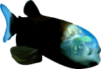ОПИСТОПРОКТОВЫЕ
Опистопроктовые — семейство необычных глубоководных рыб из отряда аргентинообразных,
обитающих в тропических и умеренных водах Тихого, Атлантического и Индийского океанов.
Характерным признаком рыб являются глаза цилиндрической формы, направленные вверх.
Некоторые представители имеют фотофоры и прозрачный лоб
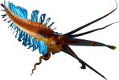КАЛЬМАРОВИДНЫЙ ЧЕРВЬ
Кальмаровидный червь, представляет собой разновидность акроцирридных морских кольчатых
червей. Он свободно плавает и встречается в толще глубоководных вод на глубине от 2039
до 2912 м. Он питается морским снегом и может вырасти примерно до 9 см в длину и 1 см в
ширину.
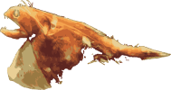ЧЁРНЫЙ ЖИВОГЛОТ
Чёрный живоглот — вид лучепёрых рыб семейства живоглотовых. В состоянии проглотить
добычу крупнее самого себя, при этом у него сильно растягивается желудок, а сердце
смещается в сторону.
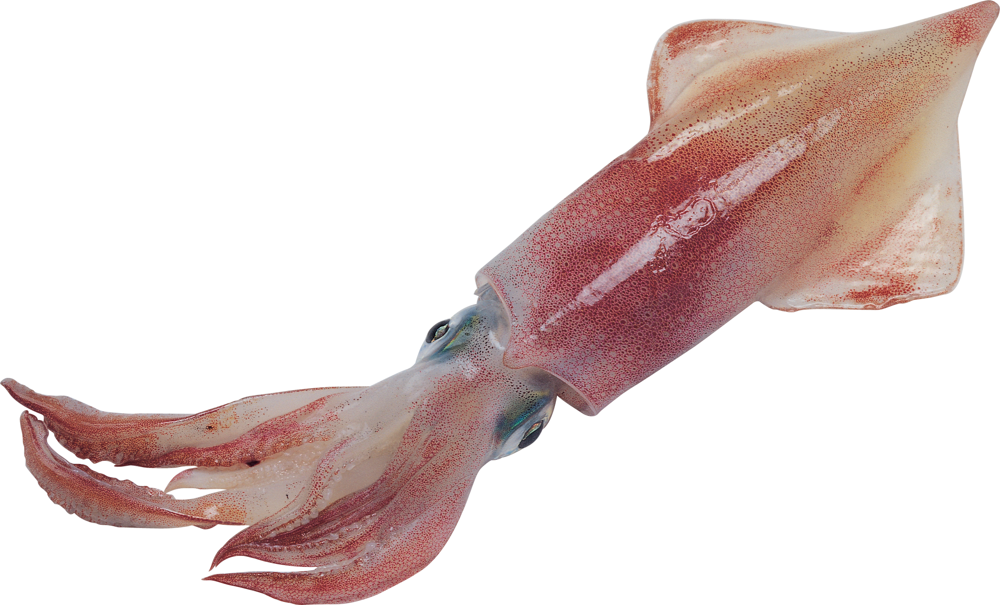АДСКИЙ ВАМПИР
А́дский вампир, или адский кальмар-вампир, — небольшой глубоководный головоногий
моллюск-детритофаг из семейства Vampyroteuthidae, выделяемый в монотипический род
Vampyroteuthis, обитающий в умеренных и тропических водах мирового океана.
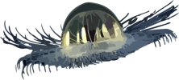КОСМИЧЕСКАЯ МЕДУЗА
Зоолог NOAA Аллен Коллинз говорит Дворскому, что это глубоководный вид, известный как
Rhopalonematid trachymedusa. Медуза имеет два ряда щупалец, один ряд направлен вверх,
а другой вниз. Его пищеварительная система ярко-красная, а репродуктивные органы желтые.
ГУБКА-АРФЫ
lyra называют губкой арфы, потому что ее основная структура, называемая лопастью,
имеет форму арфы или лиры. Каждая лопасть состоит из горизонтальной ветви,
поддерживающей несколько параллельных вертикальных ветвей. Но не позволяйте
причудливой внешности губки-арфы и невинно звучащему имени обмануть вас, на самом деле
это глубоководный хищник.
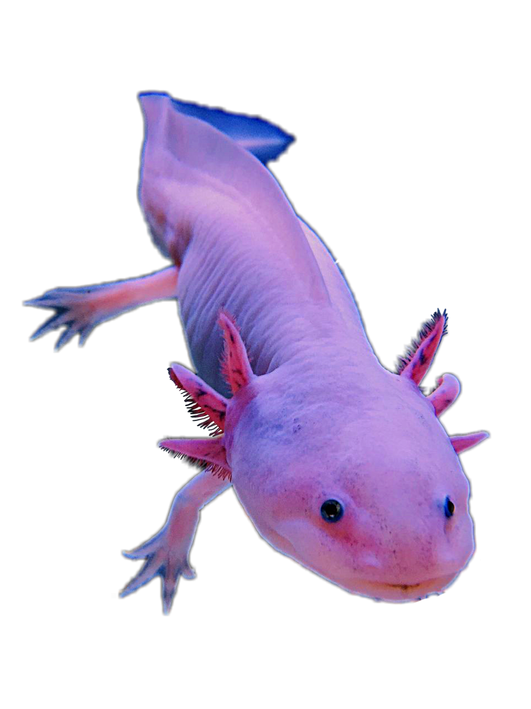АКСОЛОТЛЬ
Аксолотль похож на крупного головастого тритона с торчащими
в стороны тремя парами наружных жабр. Голова у
аксолотля очень большая и широкая, несоразмерная с телом,
рот тоже широкий, а глазки маленькие — создаётся впечатление,
что личинка всё время улыбается.
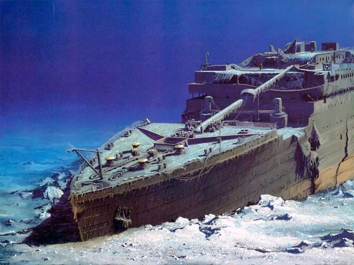ОБЛОМКИ ТИТАНИКА
В ночь с 14 на 15 апреля 1912 года лайнер столкнулся с айсбергом, и через 2 часа 40 минут,
«Титаник» распался и опустился на дно океана (3800 метров), унося с собой жизни 1513 пассажиров и членов экипажа.